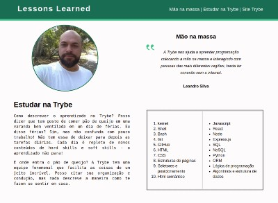
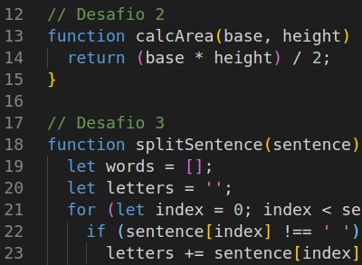

Sobre mim
Estudante de tecnologia e futuro full stack developer .Este portfólio foi iniciado como parte das atividades propostas pela Trybe. E será constantemente atualizado até agosto de 2022. Nele se encontra o link para atividades e projetos realizados durante o curso.
Algumas atualizaçoes também estão presentes no Linkedin e os exercícios diários podem ser encontrados no repositírio GitHub.
Projetos
LESSONS LEARNED
Primeiro projeto realizado, se trata de uma página estática onde colocamos em prática conhecimentos de HTML e CSS.
Além de cores e posicionamento, inserimos links internos e externos. Seu design foi inspirado no layout do site da Trybe e serviu como base para a página principal deste portfólio.
PLAYGROUND FUNCTIONS
Projeto exclusivo para colocarmos em prática conhecimentos em Javascript. Não possui uma apresentação visual em uma página web, pois seu objetivo é apresentar lógica e sintaxe para programação.
Seu link será direcionado para o repositório GitHub, onde as funções podem ser apreciadas.

Descrição ppppppppppp pppppppppppppp ppppppppppppppp pppppppp pppp
Descrição ppppppppppp pppppppppppppp ppppppppppppppp pppppppp pppp